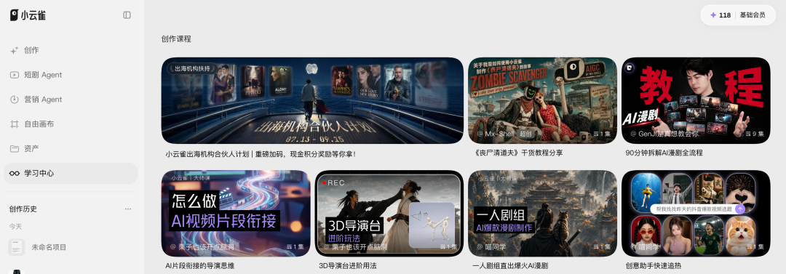
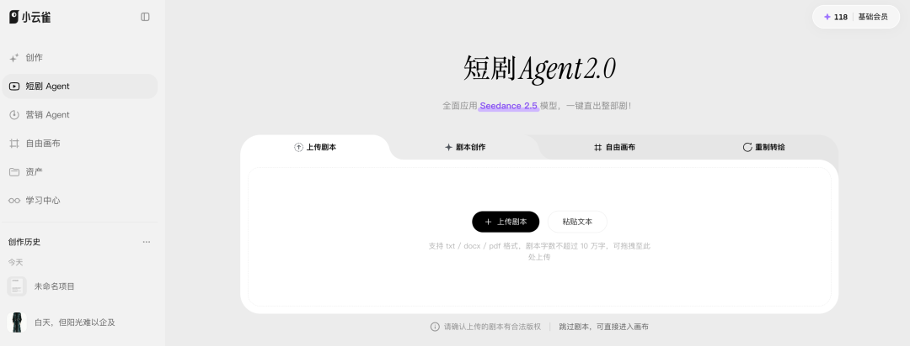
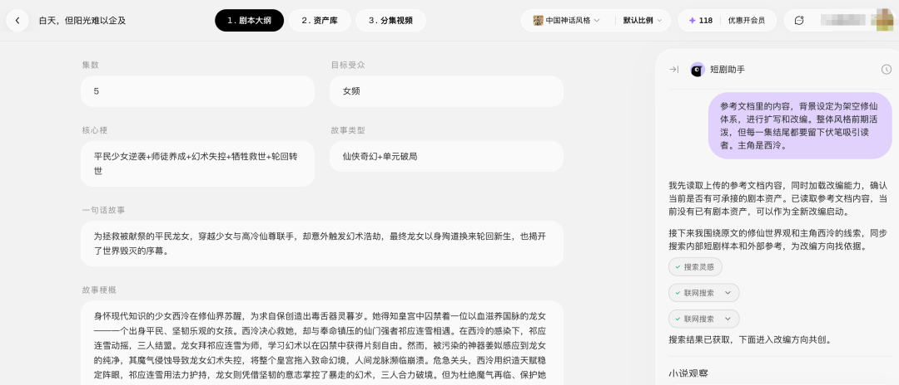
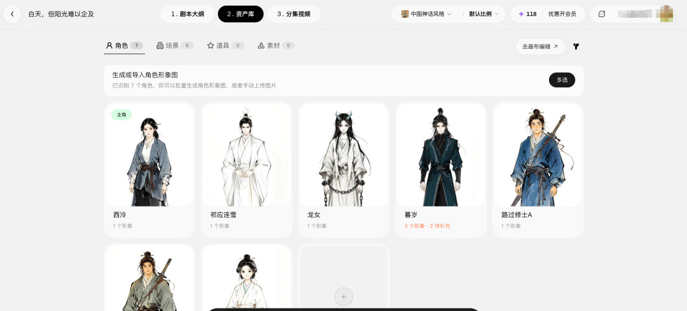
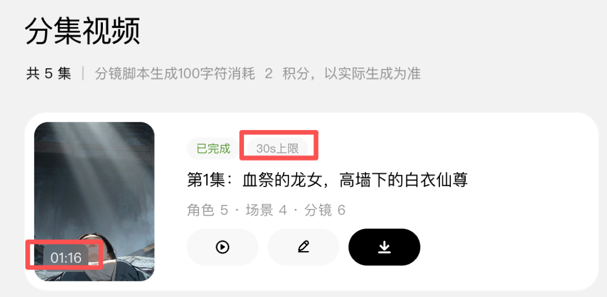
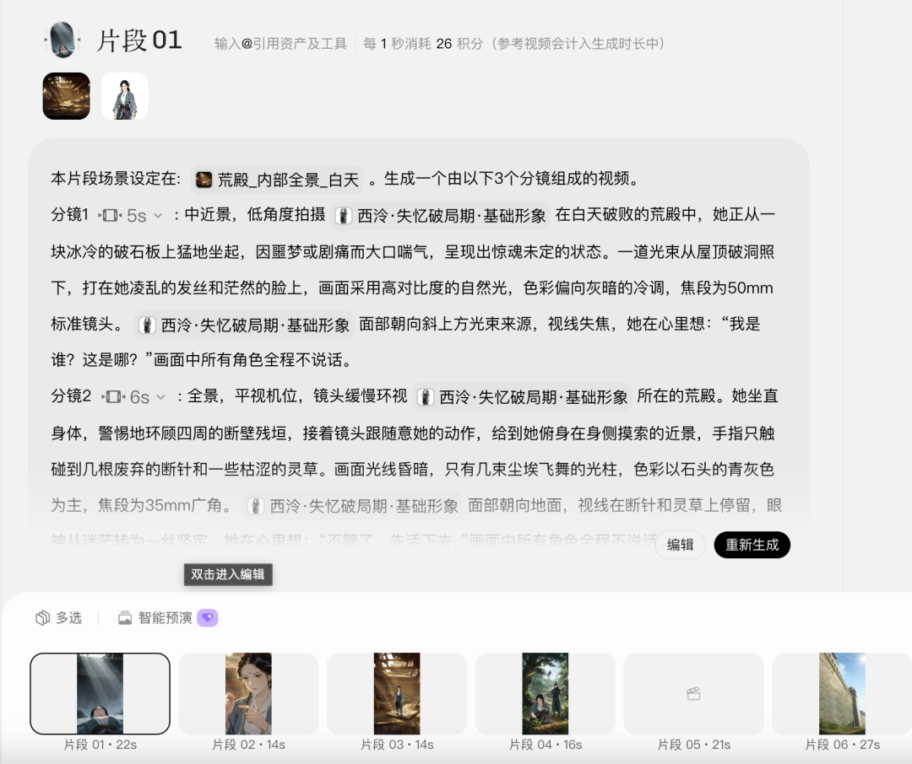
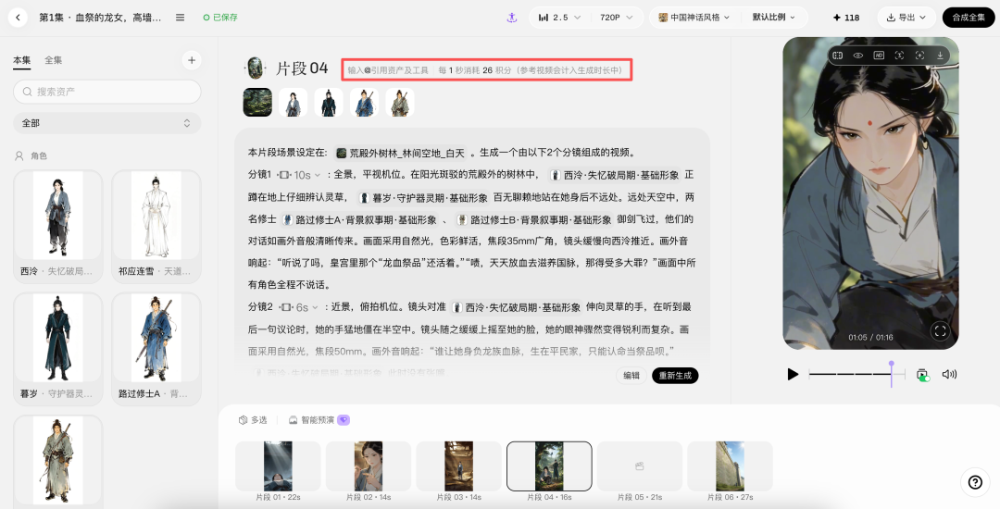

我拿一份2022年写的小说大纲去测试小云雀。看它面对一份故事逻辑弱，人物关系也极其复杂，离标准剧本还有一段距离的材料时的表现。也比较容易看出短剧Agent究竟在替用户做什么。
感受下，求轻喷，现在任何一个大模型都能输出比这个更有逻辑的大纲。
先说结论：
生成的画面质量至少达到某果无脑短剧水平，至少对于毫无经验的小白来说，使用体验非常友好。
最终项目留下5个剧本版本，共10628字，生成7个角色、6组场景和5集分镜。第1集视频完成，时长1分16秒，其余4集仍然待生成。
截至2026年8月16日，小云雀Web端已经把创作、短剧Agent、营销Agent、自由画布和资产列为主入口。它呈现的是一套创作工作台，而不只是一个视频生成页面。

跑完以后，我对小云雀的判断很明确：它已经把短剧生产流程装进一个产品，最终质量还需要人来兜底。
对产品经理来说，文生视频效果只是观察材料之一。它怎样拆任务，怎样让剧本、角色、场景和分镜共用一套项目资料，几个模块怎样交接，这些设计更能说明短剧Agent目前走到了哪里。
》它先把短剧拆成一串可以确认的任务
小云雀的主流程并不复杂：上传或粘贴剧本，确认改编方向，生成故事设定、分集大纲和剧本，再进入角色、场景、分镜、视频和预览编辑。

左侧侧边栏的“短剧Agent”只有一个入口。但它背后有没有多个专业Agent，目前看不到可靠证据。我能够确认的是，这个助手会提问、调用页面工具、保存剧本版本，并把项目推向下一阶段。

上传大纲后，它没有立刻生成整部剧，而是先让我选择改编方向，再确认集数、目标受众、核心梗、故事类型、故事梗概和人物小传。查看它生成的结果后，如果有意见再重新输入，一次只处理一个问题，信息不够时继续补，方向错了也能及时改。
这种“确认门”很适合非专业用户。确认门就是在进入下一阶段以前，让用户明确同意当前结果。它减少了长提示词的负担，也避免模型在错误方向上一次跑到底。
问题是，确认卡只问用户是否满意，没有帮助他判断什么叫合格。
本次生成的剧本结构完整，冲突、反转和分集节奏都有，文本质量只能算中下水平。人物动机偏薄，情感推进也比较直。没写过剧本的用户很容易把格式完整当成内容可用，然后把问题带进角色和视频阶段。
产品如果希望服务更严肃的创作，剧本确认页可以直接提示四项检查：
主线是否清楚
人物动机是否成立
每集钩子是否有效
前后设定是否冲突
用户修改时，还应说明哪些下游内容需要重做。
建议大家自己测试时也不要先生成五集。先做一集，把剧本改到能接受，再锁定版本。越早发现问题，返工越便宜。
》资产画布比生成按钮更重要
普通AI工具通常在一次生成后结束。短剧生产不会。一名角色要进入多个场景和镜头，服装、脸型、画风和人物关系都要继续沿用。

小云雀把剧本里的角色和场景转成项目资产。本次测试生成7个角色和6组场景，画布会显示它们出现在哪几集，并把角色、场景交给后续分镜。用户不必在几个平台之间复制人物描述，也不用手动记录某个镜头用了哪一版角色图。
这一步让产品有了项目记忆。它保存剧本版本、角色形象、场景和分镜之间的关系，后续任务可以继续使用。对不会搭工作流的人来说，这项能力比多接一个模型实用。
在这里我真的需要吐槽一下，虽然有资产库，但是对于某个角色生成的形象不满意想要换的话，既没有更换按钮也没有引导，只能自己凭感觉去点击画面，再去三级界面内寻找白色的、和白色背景融合到一起的删除小图标。如果不熟悉这套流程，就只能一直点重新生成，再指望抽卡出一个满意的形象，非常卡手。
》按分镜生成是合理的，页面却没有先讲清楚
进入视频生成阶段时，页面提示每一集最长生成30秒。我看到这句话的第一反应是，一集短剧怎么可能只有30秒。前面的剧本和分镜已经做完，如果产品只能输出半分钟，整条流程就接不上了。

进入分镜页面以后，我才弄明白，这里的30秒指单个分镜片段。系统会把一集拆成几段视频，每段最长不超过30秒，最后再组合成整集。

这个产品逻辑本身没有问题。当前视频模型更适合分段生成，某一段失败或效果不好，用户也只需要重做这一段。要是系统直接生成整集，一个镜头出错就可能让前后几十秒全部作废。
问题出在说明顺序上。用户先看到“最长30秒”，却不知道它限制的是单个分镜还是整集。直到进入下一层页面，才发现产品内部使用的是分段生成逻辑。
产品可以在集数页面直接写清楚：本集共有多少个分镜，预计总时长多少秒，将拆成几段生成，每段最长30秒。用户点击以后会发生什么，应该在点击以前说明。
这里也暴露了一个常见的AI产品问题。
产品团队熟悉模型限制，知道视频只能分段跑，很容易默认用户也理解。普通用户看到的却是一集、一段和一个分镜三个对象。名称没有说准，他就会对产品能力产生错误判断。
自己使用时，可以先看清一集被拆成多少段，再挑一段关键分镜测试。确认人物、动作和场景都能接受以后，再继续生成其余部分。
》积分按秒扣，成本要按可用结果算
2026年3月的一篇实测文章提供了一个对照。作者使用当时39元、1200积分的会员套餐，花355积分生成了71秒银行宣传片，制作约1小时，按套餐折算约11元。作者给成片打了80分，主要问题是几秒音画不同步，以及结尾的品牌文字和Logo不准确。
这个案例能证明小云雀可以较快完成一分钟宣传片，不能证明一分钟AI视频长期只要11元。
我的测试发生在8月，套餐和模型价格已经变化。测试当日，基础会员连续包月为79元，每月830积分；Seedance 2.5生成720P视频的账单价格是26积分一秒。按这个价格计算，830积分理论上只能生成约31秒视频。
还没有算失败、重试、超分和参考视频的额外消耗。
更卡手的是，页面没有直接告诉我当前分镜一共需要多少积分。生成页上方只有一行不太显眼的小字：“每1秒消耗26积分，参考视频会计入生成时长中。”用户要自己拿分镜时长乘单价，才能知道这次点击会扣多少。

如果一个分镜生成到30秒，单次就需要780积分，已经接近基础会员一个月的830积分。参考视频还会计入时长，实际消耗可能继续增加。页面不给总价，只给每秒单价，用户很容易在没有心理准备的情况下迅速用完积分。
两次任务也不同。宣传片人物少、场景集中；复杂短剧要处理多角色、多场景和跨镜头连续性，更容易返工。直接比较每分钟价格没有多少意义。
计算成本时，还要看最后留下多少可用视频。第一次生成不合格，用户重新抽取，页面显示的每秒单价没有变，实际成本已经翻倍。
小云雀已经展示模型和分辨率，价格说明也能找到。下一步应该把计算结果直接放到生成按钮旁边，例如“当前分镜29秒，预计消耗754积分，参考视频另计”。生成整集以前，再汇总所有分镜的预计时长、所需积分和当前余额。任务失败或取消后，页面也要清楚显示退回多少积分。
不过话又说回来，现在的AI视觉图像模型虽然很强，但还是不可避免要抽卡，如果每次都把消耗的积分标注出来，很容易对用户造成压力，减少使用，所以我能理解为什么不加这个提醒。
建议小白第一次使用时，先拿一个关键镜头试模型，记录生成次数、可用秒数和实际积分。这比只看套餐价格更接近真实成本。
》它适合前期制作，不能替代完整制作
目前来看，小云雀用户分为普通创作者、中小企业或个体商户、专业创作者和机构。这个分法可以解释产品为什么同时保留简单对话、参数选择和分镜编辑。
结合本次短剧测试，我认为小云雀更适合不会搭工作流的新手、有小说或剧本但缺少制作团队的作者、小型短剧工作室，以及需要快速制作概念片、动态分镜和提案样片的人。
这些用户需要一条从故事到样片的完整路径。小云雀把路径搭好了，单个结果不满意还能继续修改。专业团队也可以用它做角色定妆、场景概念和动态预演，但对人物表演、动作方向、品牌视觉和音画同步要求很高的项目，仍要使用更细的制作和审核流程。
如果站在产品经理角度，我会优先改三件事。
第一，把生成计划和费用放到点击以前。页面要分清一集、一个分镜和一个视频片段，并显示本集将拆成几段、预计多长、需要多少积分。
第二，说明修改影响和费用。用户调整角色以前，先提示要重做哪些镜头、预计消耗多少积分；能够局部重算，就不要让整集重来。
第三，增加交付前检查。系统先检查时长、画幅、角色一致性、音画同步和品牌文字，检查不过的结果不要直接显示完成。
现阶段更合适的用法，是让小云雀承担剧本整理、角色与场景资产管理、分镜和初版视频生产。人负责方向、关键镜头和最终验收。
真想知道它是否适合自己的项目，不用先生成五集。选一集、一个主角和三个难镜头，把剧本返工、角色一致性和每个可用镜头的成本记下来。三项都能接受，再继续投入。
最后附上我氪金生成的视频，为了节约成本，从角色生成到视频生成没有抽卡，一次完成～
- 本文产品流程、积分与质量判断来自2026年8月16日的个人测试；单次样本不能代表平台整体效果